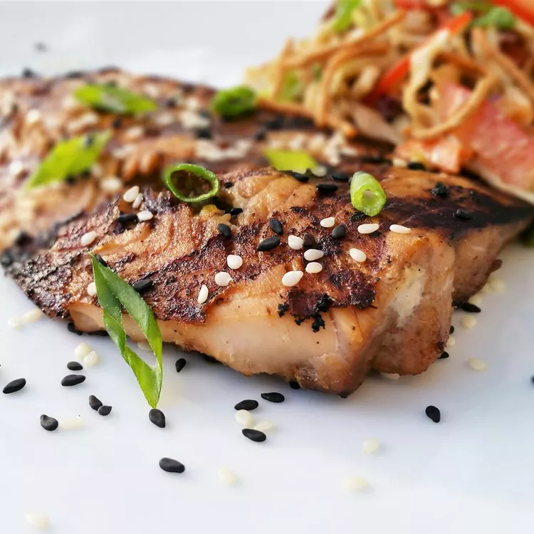

Sesame Grilled Salmon

You've been jammin' for a salmon, and I'm here to give it to ya.
In a world of dry, leathery, flavorless salmon, only one recipe can save the day, and it's this one
(I take no credit for this recipe--read the original by Emily here.)
Ingredients
- 1/4 cup light soy sauce
- 1.5 tbsp honey
- 1 tbsp grated fresh ginger
- 1 clove garlic, minced
- 1 lb salmon fillets
- 1 tsp sesame oil
- 2 tsp sesame seeds
Steps (as written by Emily)
- Whisk soy sauce, honey, ginger, and garlic together in a bowl until marinade is evenly mixed. Set aside 1/4 of the marinade.
- Place salmon fillets in a shallow dish; pour the remaining marinade over the salmon. Cover dish with plastic wrap and refrigerate for 5 minutes.
- Heat sesame oil in a large skillet over medium-high heat.
- Remove salmon from marinade, shaking to remove excess marinade, and place, skin-side up, into the hot oil; cook for 4 minutes.
Discard unused marinade in the shallow dish. Flip salmon and drizzle the reserved marinade over salmon; sprinkle with sesame seeds.
- Cook until fish flakes easily with a fork, 5 to 7 minutes. Flip salmon, remove skin, and cook 1 minute more.